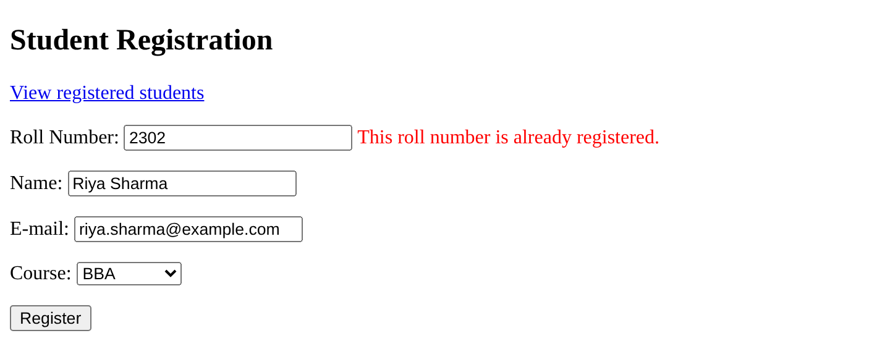

Create a registration form and insert the form data into a MySQL table.
Program 8.5: Registration Form Inserting Data into a MySQL Table
Concepts used
Self-submitting POST form, server-side validation, sticky form, mysqli_prepare(), placeholders, mysqli_stmt_bind_param(), mysqli_stmt_execute(), mysqli_stmt_errno(), mysqli_insert_id(), error_log().
Test data: First submission: roll number 2304, name Aarav Mehta, e-mail aarav.mehta@example.com, course BCA. Second submission: roll number 2302 (already used by Simran Kaur), name Riya Sharma, e-mail riya.sharma@example.com, course BBA.
Logic
- Load the connection file and prepare the list of allowed courses.
- When the form is submitted, read, trim and validate the four values.
- If the values are valid, prepare the INSERT statement, bind the four values as strings and execute it.
- On success, display a confirmation with the new ID and clear the form; on a duplicate roll number, display a message beside the field; on any other error, log it and display a general message.
- Display the form with any messages and the values to be kept.
Code
db.php opens the database connection and is shared by all database pages (Section 8.5.6).
<?phprequire "db.php"; $courses = ["BCA", "BBA", "B.Com"];$roll = $name = $email = $course = "";$errors = [];$message = ""; if ($_SERVER["REQUEST_METHOD"] == "POST") { // Read and validate the submitted values $roll = trim($_POST["roll"] ?? ""); $name = trim($_POST["name"] ?? ""); $email = trim($_POST["email"] ?? ""); $course = $_POST["course"] ?? ""; if (!ctype_digit($roll) || strlen($roll) != 4) { $errors["roll"] = "Roll number must have exactly 4 digits."; } if (strlen($name) < 3) { $errors["name"] = "Name must have at least 3 characters."; } if (filter_var($email, FILTER_VALIDATE_EMAIL) === false) { $errors["email"] = "Enter a valid e-mail address."; } if (!in_array($course, $courses)) { $errors["course"] = "Select a course from the list."; } if (count($errors) == 0) { // Prepared INSERT statement with four placeholders $sql = "INSERT INTO students (roll_no, name, email, course) VALUES (?, ?, ?, ?)"; $stmt = mysqli_prepare($conn, $sql); mysqli_stmt_bind_param($stmt, "ssss", $roll, $name, $email, $course); if (mysqli_stmt_execute($stmt)) { $message = "Registration completed successfully. Student ID: " . mysqli_insert_id($conn) . "."; $roll = $name = $email = $course = ""; // clear the form } elseif (mysqli_stmt_errno($stmt) == 1062) { $errors["roll"] = "This roll number is already registered."; } else { error_log("Registration failed: " . mysqli_stmt_error($stmt)); $message = "Sorry, the registration could not be saved. Please try again later."; } mysqli_stmt_close($stmt); }}mysqli_close($conn);?><!DOCTYPE html><html lang="en"><head> <meta charset="UTF-8"> <title>Student Registration</title> <style>.error { color: red; }</style></head><body> <h2>Student Registration</h2> <p><a href="list.php">View registered students</a></p> <?php if ($message != ""): ?> <p><strong><?php echo htmlspecialchars($message); ?></strong></p> <?php endif; ?> <form method="post"> <p> <label for="roll">Roll Number:</label> <input type="text" id="roll" name="roll" value="<?php echo htmlspecialchars($roll); ?>"> <span class="error"><?php echo $errors["roll"] ?? ""; ?></span> </p> <p> <label for="name">Name:</label> <input type="text" id="name" name="name" value="<?php echo htmlspecialchars($name); ?>"> <span class="error"><?php echo $errors["name"] ?? ""; ?></span> </p> <p> <label for="email">E-mail:</label> <input type="text" id="email" name="email" value="<?php echo htmlspecialchars($email); ?>"> <span class="error"><?php echo $errors["email"] ?? ""; ?></span> </p> <p> <label for="course">Course:</label> <select id="course" name="course"> <option value="">-- Select --</option> <?php foreach ($courses as $c): ?> <option value="<?php echo $c; ?>" <?php if ($course == $c) echo "selected"; ?>><?php echo $c; ?></option> <?php endforeach; ?> </select> <span class="error"><?php echo $errors["course"] ?? ""; ?></span> </p> <input type="submit" value="Register"> </form></body></html>
<?php// db.php - opens the database connection used by every database pagemysqli_report(MYSQLI_REPORT_OFF); // functions return false on failure $conn = mysqli_connect("localhost", "root", "", "college_db"); if ($conn === false) { // A simple message for the user; no connection details are shown exit("Sorry, the student database is not available at the moment.");} mysqli_set_charset($conn, "utf8mb4");
Output
These are real screenshots, taken by running the program with the test data.

Understanding the output
The first submission added Aarav Mehta as the fourth record, so the database gave it the ID 4, and the form was cleared. The ID is a sample value: it is 4 when Program 8.3 has been run once, but it is higher if earlier insertions, including failed ones, have used up numbers, because AUTO_INCREMENT never reuses a number. The second submission passed validation but was rejected by the database because roll number 2302 already belongs to Simran Kaur; the program detected error 1062 and kept Riya Sharma's entries in the form so that only the roll number needs correction.
How it works
Validation: When the page is first opened, the request method is GET, so only the empty form is displayed. After submission, the four values are read, trimmed and checked, and each failed check stores a message under the field's key, exactly as in Section 7.7. The database is used only when $errors is empty.
Insertion: mysqli_prepare() sends the INSERT statement with four placeholders to the server. mysqli_stmt_bind_param() attaches the four variables, all of type string, in the order of the placeholders. mysqli_stmt_execute() then executes the statement with these values. Because the values travel separately from the SQL text, a name such as D'Souza is stored correctly and cannot change the statement.
Result: On success, mysqli_insert_id() gives the id of the new record, the confirmation is stored, and the variables are cleared so that the form is ready for the next student. If execution fails with error 1062, the UNIQUE constraint has rejected a repeated roll number, and a message is placed beside the roll-number field while the typed values are kept. Any other failure is recorded with error_log() and reported with a general message. The statement and the connection are then closed, and the page displays the message and the form.
Run it yourself
college_db database (see Setup).Running it in XAMPP
Save the file in C:\xampp\htdocs\phpbook\ch08 with db.php, and make sure that Programs 8.2 and 8.3 have been run. Open http://localhost/phpbook/ch08/register.php, enter the first set of test data and click Register; then enter the second set and click Register again.
Common mistakes
- Building the query by joining the variables, as in "... VALUES ('
$roll', '$name', ...)", which allows SQL injection and fails for names containing quotation marks. - Writing the placeholders in quotation marks, as in VALUES ('?', '?', ...), which inserts question marks instead of the values.
- Giving a type string whose length differs from the number of placeholders, such as "sss" for four placeholders.
- Inserting before validating, so that invalid values reach the database.
- Displaying
mysqli_stmt_error()to the user, which reveals table and column names.